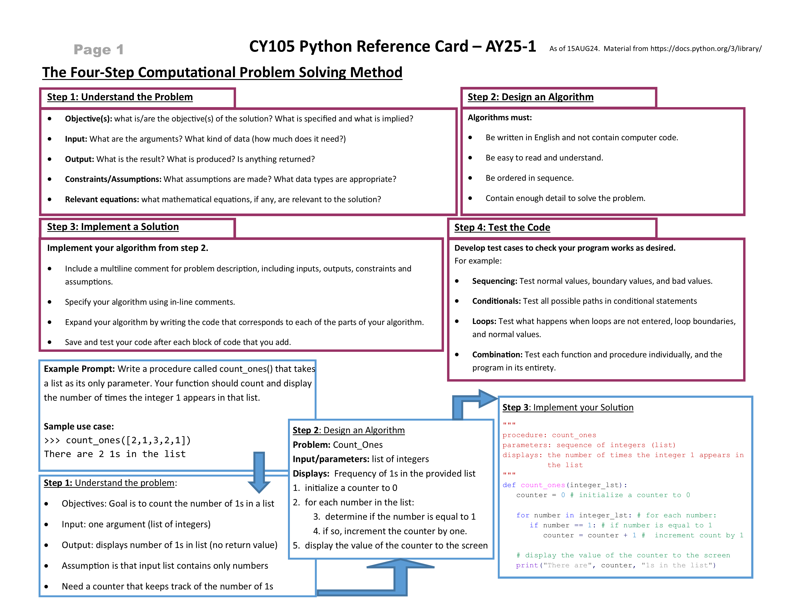
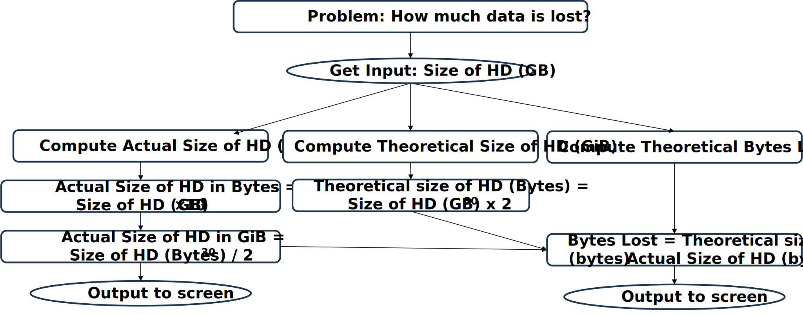
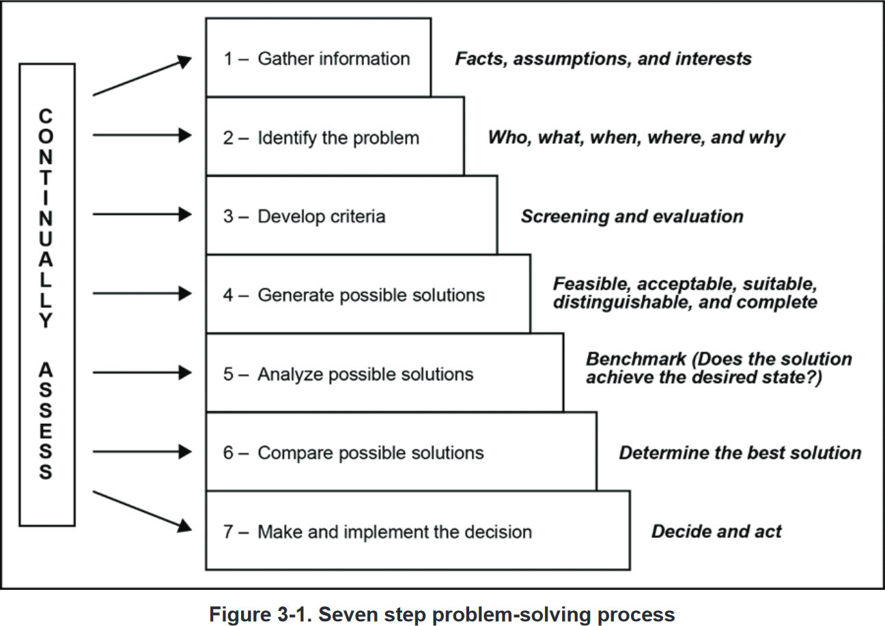
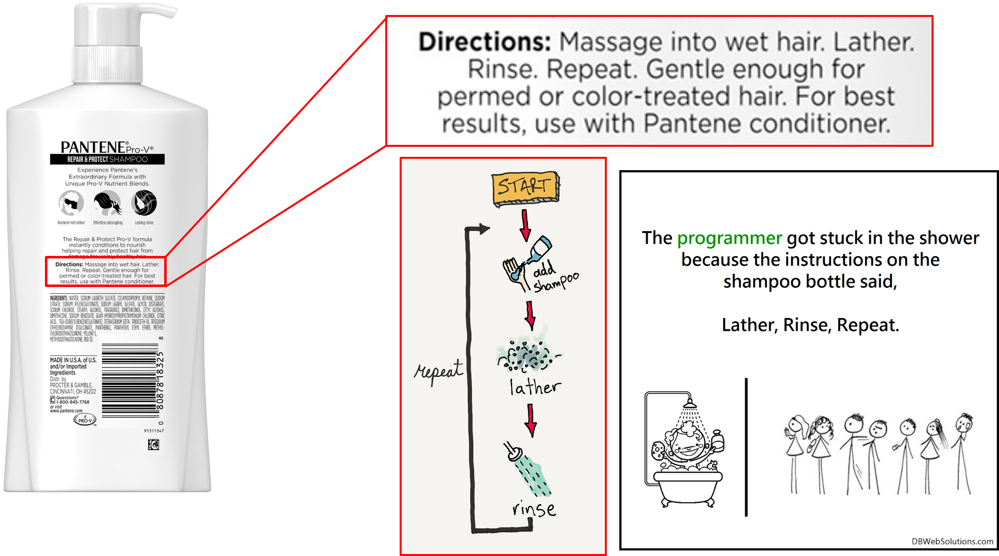
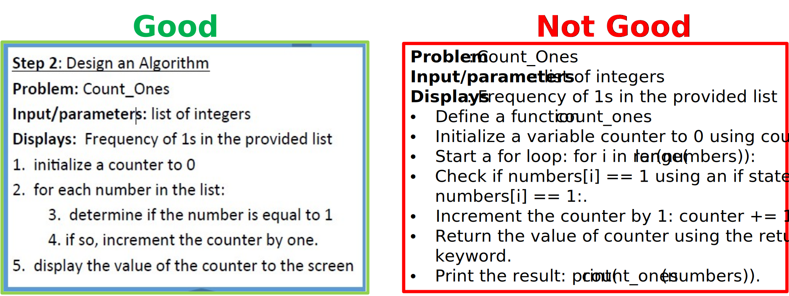

Algorithms
Solving problems with computers
Monday, August 26, 2024
Discussion!
- PB&J Sandwich
- What is happening in the video?
- What does this tell us about how a computer solves problems vs a human?
CY105 Python Reference Card

- Resource for exams!
- Bring to class daily.
- Do not lose it.
- Do not write on it.
- No scribbles, no notes!
- Exception: your name
Lesson Objectives
- Articulate the four steps of computational problem solving
- Articulate some strategies for understanding a problem and problem decomposition
- Define what an algorithm is and its building blocks
- Sequencing
- Conditionals
- Loops
- Explain the difference between an algorithm, pseudocode and a program
- Practice writing algorithms the CY105 way
Announcements
- DAAW for WPS1 due yesterday!
- WPS2 due 02SEP
- 5 attempts; highest score counts
- Extra credit assignments published!
Computational Problem Solving
Best Practices for Problem Solving
- Gather key facts
- Identify main tasks
- Inputs - what is given?
- Outputs - what should you produce?
- What can you assume?
- Can you think of related mathematical equations?
When in doubt, draw it out!
Problem Decomposition
- Top-Down Design
- Break the problem into smaller parts
- Solve each part separately
- Combine the solutions
Army Problem Solving Process
Algorithm
What is an Algorithm?
- Step-by-step process
- Written in a human language
- Describes how to solve a problem
- Always gives the correct answer
Is this a good algorithm?
Another Algorithm
Step 1: Preheat the oven to 325°F. Grease a 9x5-inch loaf pan.
Step 2: Whisk together flour and baking powder in a bowl. Cream together sugar and cream cheese with an electric mixer until fluffy. Stir in yogurt. Add eggs one at a time, beating well after each addition. Add vanilla bean paste. Slowly add flour mixture, beating on low speed and taking care not to overmix batter.
Step 3: Warm chocolate-hazelnut spread in the microwave at 360 W until warm but not bubbling, about 1 minute. Stir and check consistency. Microwave for an additional 30 seconds if necessary.
Step 4: Pour 1/2 of the cake batter into the prepared loaf pan. Pour in 2/3 of chocolate-hazelnut spread in a swirl over the batter. Pour in remaining batter and swirl remaining spread over the top. Use a bamboo skewer to create more swirls by running the skewer through the batter in a circular motion. Take care not to stir the mixture, but simply create a marbled design.
Step 5: Bake in the preheated oven until a toothpick inserted into the center comes out clean, about 50 minutes. Allow to cool before removing from the pan.
Building Blocks of Algorithms
- Sequencing
- Conditionals
- Loops
Sequencing
- Wake up
- Brush teeth
- Shower
- Wear clothes
- Eat breakfast
- Put on socks
- Put on shoes
- Go to class
Conditionals
- Wake up
- Brush teeth
- Shower
- Wear clothes
- If raining, wear raincoat
- Else, wear light jacket
- If I have time, eat breakfast
- Else, grab a granola bar
- Put on socks
- Put on shoes
- Go to class
Loops
- Wake up
- Brush teeth
- Shower
- Grab shampoo
- Lather
- Rinse
- Repeat until clean
- …
Pseudocode
- Notation more precise than English
- Not as precise as a programming language
- Uses sequencing, conditionals, and loops
- Does not actually run on a computer
Example: Data Lost Algorithm
Inputs: Size of HD (in GB)
Output: Displays actual size of HD in GiB, and the theoretical amount of data lost in GiB
Assumptions: User inputs an integer
1. Ask the user to input the size of the hard drive in GB (in_size).
2. If in_size is less than or equal to 0, output 0 and quit. Otherwise, continue to step 3.
3. Compute actual size of the hard drive (in bytes): actual = in_size x 109.
4. Compute theoretical size of the hard drive (in bytes): theoretical = in_size x 230.
5. Compute the data lost (in bytes): loss = theoretical - actual.
6. Compute and output the actual size of the hard drive in GiB, rounded to two decimal places: actual / 230.
7. Compute and output the data lost in GiB, rounded to two decimal places: loss / 230.Program
- Expressed in a programming language
- Implementation of an algorithm
- Can be run on a computer
Example: Data Lost Program
#Ask the user to input the size of the hard drive in GB (in_size).
in_size = int(input("Please enter drive size in GB: "))
#if in_size is less than or equal to 0, output 0 and quit. Otherwise, continue to step 3.
if in_size <= 0:
print("Invalid input.")
else:
#Compute actual size of the hard drive (in bytes): actual = in_size x 10^9.
actual = in_size * 10**9
#Compute theoretical size of the hard drive (in bytes): theoretical = in_size x 230.
theoretical = in_size * 2**30
#Compute the data lost (in bytes): loss = theoretical - actual.
loss = theoretical - actual
#Compute and output the actual size of the hard drive in GiB, rounded to two decimal places
actual_GiB = actual / 2**30
print("The hard drive is actually:", round(actual_GiB, 2), "GiB")
#Compute and output the data lost in GiB, rounded to two decimal places: loss / 230.
loss_GiB = loss / 2**30
print("This represents a loss of", round(loss_GiB, 2), "GiB")Writing Algorithms the CY105 Way
- Must be written in English and not contain computer code!
- Be easy to read and understand!
- Be ordered in sequence!
- Contain enough detail to solve the problem!
Example
In-Class Exercise
Base Frequency
Genomic data primarily consists of four bases: adenosine (A), guanine (G), cytosine (C), and thymine (T). It is the basic unit of data in the human body. Write an algorithm that computes the percentage of As, Gs, Cs, and Ts in a given DNA sequence and displays it to the screen.
For example, the sequence AGCCGTCGTCTATAT is 15 characters long. There are 3 As, 3 Gs, 4 Cs, and 5 Ts in this sequence. Therefore, the percentage of As is 20%, the percentage of Gs is 20%, the percentage of Cs is 26.7%, and the percentage of Ts s 33.3%. While you may assume that the only letters in the string are A,G,C, or T, you may not make any assumptions the length of the DNA sequence.
Error Detection
Electrical fluctuations in computers can sometimes cause bits to flip in data. As a result, many binary strings usually use a parity bit to help check if a bitstring has errors in it. For example, all ASCII characters can be represented using just 7 bits. Instead, the character data is stored using a total of 8 bits, where the last bit (the right-most), called the parity bit, is set to 0 if the number of 1s in the other 7 bits is even. Otherwise, the parity bit is set to 1.
Write an algorithm that takes an 8-bit string and determines if it is corrupted.
High Low
The radio station, 100.7 WHUD has a game called the High Low Cash Game, where people have to call in to guess the amount of money in a cash vault. The radio hosts never say the dollar amount on the air but will tell a caller if their guess is “too high” or “too low”. To win the jackpot, the caller has to guess the dollar amount down to the last cent. Assuming the jackpot is never more than $10,000.00, devise an algorithm that will guarantee a win in the fewest amount of calls (assume that all the callers agree to follow the same algorithm). Following your algorithm, what is the maximum number of calls needed to assure a win?
Perfect Number
A number is considered perfect if the sum of its divisors (excluding the number itself) is equal to the number. Here are some examples of perfect numbers:
6 = 1 + 2 + 328 = 1 + 2 + 4 + 7 + 14496 = 1 + 2 + 4 + 8 + 16 + 31 + 62 + 124 + 248
Write an algorithm for a program that can if a particular integer is perfect. You may assume that the inputted number is always a positive integer.
Magic Number
There is a two-digit number that when squared, the resulting three-digit number has the same rightmost two digits as the original two-digit number. In other words, for a number of the form AB, AB * AB = CAB for some C.
Write an algorithm for a program that will discover what this special number is through brute-force (in other words, iterating through all possibilities).
Fibonacci Sum
The Fibonacci sequence is a famous one in mathematics, where Fibonacci number is derived from the sum of the previous two Fibonacci numbers. The first few Fibonacci numbers are:
0, 1, 1, 2, 3, 5, 8, 13, 21, 34, 55, 89, 144, 233, …
Write an algorithm for a program that, given a number n, will compute the sum of the first n Fibonacci numbers. For example, inputting 3 should yield 2, while inputting 10 should yield 88.
Conclusion
Check on Learning
- Four steps of computational problem solving
- Understand the Problem
- Design an Algorithm
- Implement a Solution
- Test the Code
- How do you decompose a problem?
- What are the building blocks of an algorithm?
- Sequencing
- Conditionals
- Loops
- What is pseudocode?
- Is an algorithm the same as pseudocode?
- Can you run pseudocode?
- What is the difference between an algorithm and a program?
- Can you run a program?
Reminders
- Complete DAAW in Canvas
- WPS2 due 02SEP
- Excel sheet upload, 5 attempts
- Extra credit assignments published!
- Lesson 5 readings are long and really important
- Start early and come prepared!
- Clear the boards!
- Bluefruit?